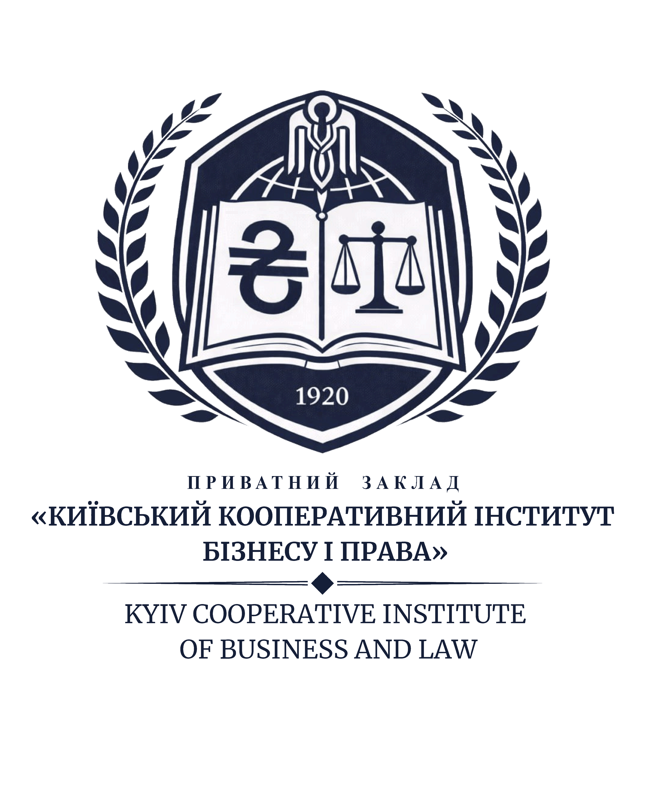
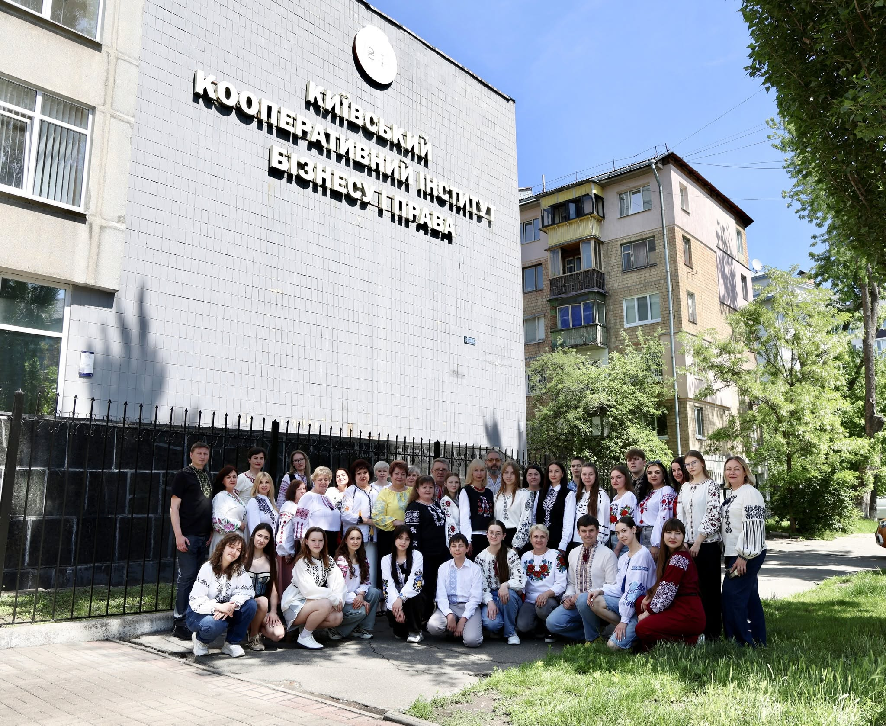
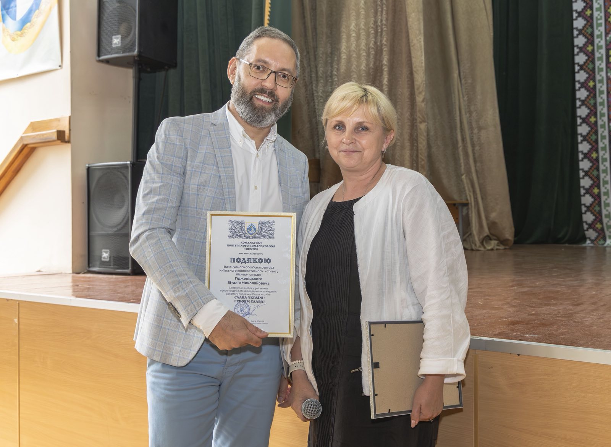

Практичні програми
Реальні кейси, професійні завдання та навички, які потрібні для першого професійного досвіду.
Практичні програми, активне студентське середовище і зрозумілий шлях до професії – усе для впевненого професійного старту.
Активна спільнотаНавчання, проєкти й події допомагають швидко відчути себе частиною студентської спільноти.




Приватний заклад "Київський кооперативний інститут бізнесу і права" поєднує фахову освіту, практичні завдання, проєкти та підтримку студентської спільноти. Тут студент проходить шлях від першого знайомства зі спеціальністю до практичних навичок, проєктів і готовності робити перші професійні кроки.
Реальні кейси, професійні завдання та навички, які потрібні для першого професійного досвіду.
Практика, резюме, співбесіди та перші професійні кроки.
Проєкти, події й наставництво, які допомагають швидше відчути себе частиною спільноти.
Для вступників, студентів, випускників і гостей сайту: основні розділи, з яких починається знайомство з інститутом.
Структура, керівництво, відділення, контакти, документи та публічна інформація.
ПерейтиПравила прийому, освітні програми, вартість навчання та календар вступника.
ПерейтиРозклад, вибіркові дисципліни, студентське життя, підтримка й кар’єрні можливості.
ПерейтиАсоціація випускників, історії успіху, менторство та зустрічі спільноти.
ПерейтиНаукові гуртки, конференції, гранти, міжнародні проєкти та публікації.
ПерейтиЕлектронний каталог, нові надходження, репозитарій та академічна доброчесність.
ПерейтиПрограми поєднують фундаментальні знання, проєктну роботу та практику у партнерських організаціях.
Аналітика ринку, просування, продажі та робота з клієнтськими потребами.
ДетальнішеБухгалтерський облік, податкова звітність, фінансова аналітика та цифрові сервіси.
ДетальнішеОрганізація виробництва, якість продуктів і технології сучасної ресторанної справи.
ДетальнішеРеальні події, навчальні практики, творчі звіти та волонтерські ініціативи спільноти.